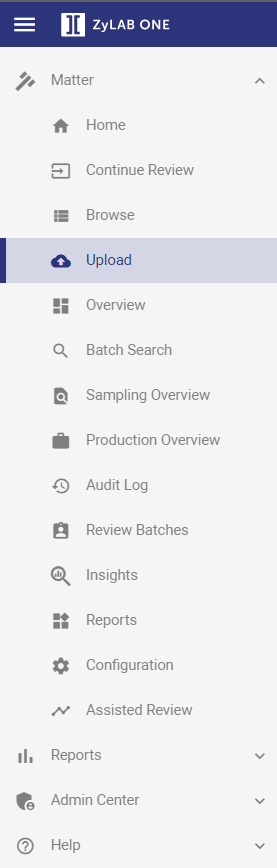

Note: Depending on the permissions you have received, you may not be able to create a matter.
The Matter creator is automatically the Matter administrator, and can, for instance, upload data and manage security.
A matter includes electronic data that is converted to TIFF and a link to the data in its native format is provided. For review, only the TIFF image is used to avoid spoliation. The integrity of the native file (and its metadata) is retained.
Text and metadata is extracted and entered into a database (matter) so that the documents are searchable. Due to the uniform state of the data, reviewers can move from item to item quickly and efficiently.
|
|
Note: Depending on the permissions you have received, you may not be able to create a matter. The Matter creator is automatically the Matter administrator, and can, for instance, upload data and manage security. |
To create a new matter, follow the steps below.
Go to the Select Matter page and click Add Matter.

Define a Matter Name.
Select a Matter template.
For more information on Matter templates, click
The Matter template describes a set of features and behaviors. For example, the fields (columns) that are displayed in the Document List, the tags that are shown in Document View, the language of the user interface and a set of auto-classification rules. Most of these predefined settings can be adjusted after matter creation.
Select the Processing Rules. By default, the recommended Matter Processing Rules are selected.
For more information on Processing Rules, click
The Matter Processing Rules define how your data will be processed. For example, you can choose to OCR (Optical Character Recognition) your data or not. Please note that you cannot switch to another set of processing rules after matter creation. If you want to process your data differently, you need to create a new matter.
Processing_Deduplication_NoOCR: Data will be processed without OCR.
Note: Duplicate files are filtered out and not available for review.
Processing_Deduplication_NoOCR_AudioSearch: Data will be processed without OCR and with Audio Search.
Note: Duplicate files are filtered out and not available for review.
Processing_Deduplication_OCR: Data will be processed with OCR.
Note: Duplicate files are filtered out and not available for review.
Processing_Deduplication_OCR_AudioSearch: Data will be processed with OCR and Audio Search.
Note: Duplicate files are filtered out and not available for review.
Review_Deduplication_NoOCR: Data will be processed without OCR.
Note: Duplicate files are available for review.
Review_Deduplication_NoOCR_AudioSearch: Data will be processed without OCR but with Audio Search.
Note: Duplicate files are available for review.
Review_Deduplication_OCR: Data will be processed with OCR.
Note: Duplicate files are available for review.
Review_Deduplication_OCR_AudioSearch: Data will be processed with OCR and Audio Search.
Note: Duplicate files are available for review.
Click Save.
Open your newly created matter from the Select Matter screen.
Note: New matters are always displayed in the top-left corner as matters are sorted on last created date.
Upload data to your matter.

Once a matter has been created, learn about next steps you can take by watching the videos below.